Farsø
Feinkörniger, geschichteter Granit mit Flecken von rotbraunem Feldspat
Höhe: 180 cm
Größte Breite: 72 cm
Dicke: 40 cm
Runenhöhe: zw. 10 und 17 cm
Runeninschrift :
Toste und Asbjørn errichteten diesen Stein zum Andenken an ihren Bruder Tue

34 - Farsø - Letztes Update 24.08.2025
Listennummer : DR kein Eintrag / DK NJy 50
| Navidaten: 56.77418 9.33991 oder: Nørregade 21, 9640 Farsø |
Transliteration: : tu(s)(t)i : uk : ąsbiurn : rsþu : stin : þąnsi : (a)ft : tufa : bruþur |: (s)(i)(n) / --- : ...
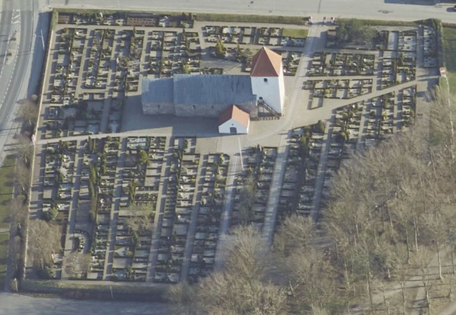
Das ist ein Luftfoto vom 20.04.2023 von Skråfoto - Lizenz: CC BY 4.0 - das die Kirche von Farsø zeigt. Skråfoto ist eine Webanwendung, die von Klimadatastyrelsen weltweit kostenlos bereitgestellt wird. Die Aufnahmen werden seit 2017 alle zwei Jahre erneuert und neben einer Senkrechtaufnahme wird ein Schrägbild aus jeder Himmelsrichtung angeboten, das man über eine Adresssuche aufrufen kann.
Der grobe Stein wurde erst am 15.12.1955 bei einer Restaurierung der Kirche gefunden. Als Handwerker mit Grabungsarbeiten für eine Rohrleitung beschäftigt waren, stießen sie auf einen großen Stein, der als Schwelle vor der Nordtür lag. Als man den Stein freilegte, erkannte man durch Menschenhand eingeritzte Zeichen. Der örtliche Schulinspektor Tom Christensen (Otto Ellinor Tom Christensen - *10.01.1903 in Odense - 07.02.1984 - link-LIVES)
Bildquelle: Lokalhistorisk Arkiv for Farsø og Omegn - Lizenz: Public Domain - Foto um 1955
wurde hinzugerufen und identifizierte ihn als Runenstein. Noch am gleichen Abend wurde das Nationalmuseum in Kopenhagen über den Fund in Kenntnis gesetzt. Ein erster Bericht fand sich am 22.12.1955 in "Aalborg Amtstidende". Am 18.01.1956 wurde die erste Deutung mit einem Foto in "Jyllands-Posten" veröffentlicht.
Der Runenstein wurde zunächst ins Waffenhaus verbracht und dort aufgestellt. Das rechte obere Eck des Steins wurde bei den Arbeiten abgeschlagen. Nur ein kleines Bruchstück fand sich durch Tom Christensen im Bereich des Fundortes.
Der Stein wurde später innerhalb der Kirche von Farsø, in einer Seitenwand des Waffenhauses - mit dem kleinen Bruchstück angesetzt - eingemauert, wo er sich dann jahrelang befand. Irgendwann wurden die Runen mit roter Farbe hervorgehoben. Der Runenstein wurde im Rahmen einer neuerlichen Restaurierung im Jahr 2010 wieder herausgenommen und neu aufgestellt. Die Wiedereröffnung der Kirche war am 15. August 2010. Nun steht der Runenstein im Turmraum, links vor der Orgel, was man sich heute sogar über Google StreetView anschauen kann! Meines Erachtens hat man das kleine Bruchstück nun weggelassen (warum?).
Unter der Runeninschrift ist der Stein mit einer stilisierten Schiffsdarstellung ohne Mast verziert, die von Steven zu Steven 42 cm misst und von einem tiefen Riss durchzogen ist.
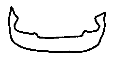
Die Steinoberfläche ist von Verwitterung geprägt, die das Ablesen erschwert.
Die Inschrift beginnt in der unteren rechten Ecke und verläuft entlang der Steinkontur nach links unten, um dann im mittleren Runenband wieder nach oben zu laufen. In der rechten oberen Ecke waren auch Runenzeichen, aber durch die Beschädigung sind diese verloren, bzw. undeutbar. Ob dieser Inschriftteil vorangestellt war, oder den Abschluss bildete ist darüber unklar.
Man datiert den Runenstein heute in die Zeit von 970 bis 1020 n. Chr.
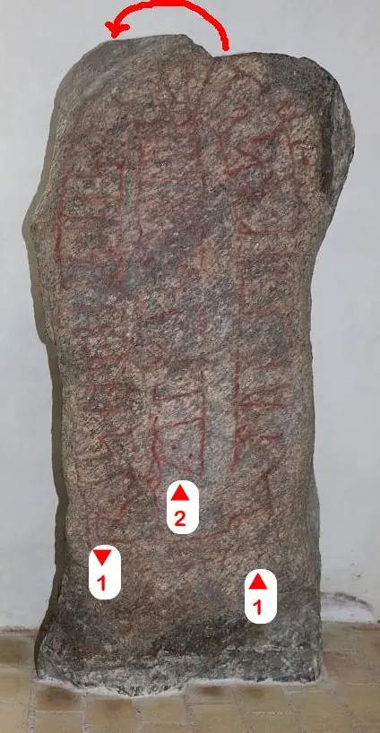
Durch Erik Moltke (*04.04.1901 - 19.10.1984, Runologe, Historiker - link-LIVES)
 Bildquelle: Scan von Buchumschlag "Runerne i Danmark og ders
oprindelse" - Erik Moltke - 1976 - Lizenz:
CC-BY-SA
Bildquelle: Scan von Buchumschlag "Runerne i Danmark og ders
oprindelse" - Erik Moltke - 1976 - Lizenz:
CC-BY-SA
wurden diese beiden sw Fotografien des Runensteins aufgenommen. Das linke Foto entstand wenige Tage nach seiner Entdeckung am 29.12.1955, während das rechte Foto, nun im Waffenhaus eingemauert, am 14.07.1956 - bei einem neuerlichen Besuch vor Ort - aufgenommen wurde. Beide Fotos zeigen auch das abgeschlagene, kleine Bruchstück rechts oben.
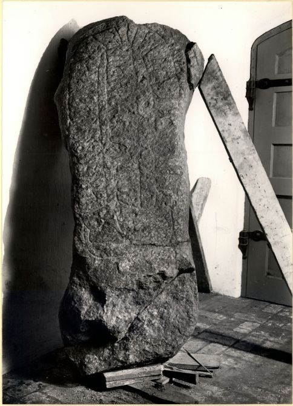
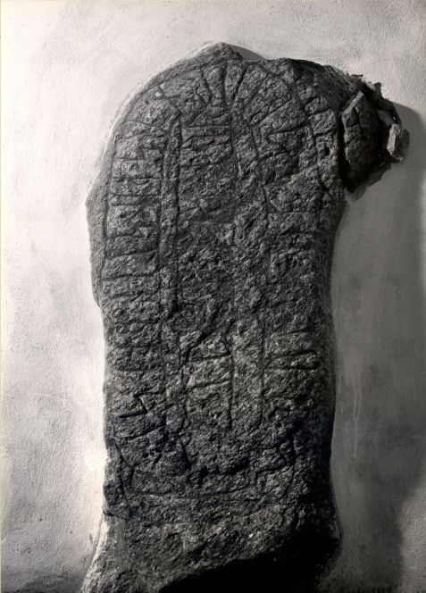
Quelle: Digitale Sammlung des Nationalmuseums in Kopenhagen - Lizenz: CC-BY-SA
Im Vorfeld zu dem 2016 erschienenen Buch von Lisbeth M. Imer (*1973, Runologin am Nationalmuseum Kopenhagen) "Danmarks Runesten - en fortælling" reiste sie mit dem Fotografen Roberto Fortuna zur Bestandsaufnahme durch die Lande. Dieser hat die Runensteine mit Schräglicht aufgenommen und darüber wirklich herausragende Fotos erzielt. Diese Fotografie stammt vom 20.03.2012.
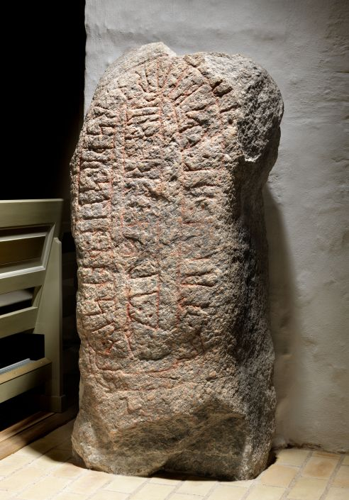
Quelle: Digitale Sammlung des Nationalmuseums in Kopenhagen - Lizenz: CC-BY-SA
Die Kirche von Farsø habe ich bereits mehrfach aufgesucht. Zuerst am Samstag, 10.08.1996 - siehe Foto im linken Frame - und nochmals am Freitag, 23.08.2013 (siehe unten).
Bei meiner 2022er Jütland Wikingertour traf ich am Samstag, 04.06.2022, auf eine verschlossene Kirche. Als ich am Dienstag, 14.06.2022, erneut vorbeikam, war sie geöffnet.
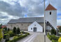 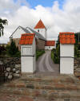 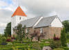 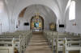 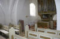


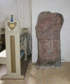 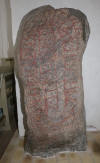 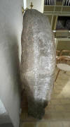 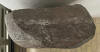 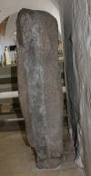 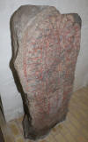 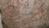


Die Kirche ist wohl an Werktagen zwischen 08.00 und 16.00 Uhr immer geöffnet (ohne Gewähr).
Bei meinem Besuch in Farsø am Freitag, dem 23.08.2013 habe ich diese Fotos gemacht (vergrößerte Darstellung über Mausklick):
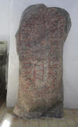 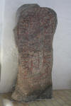 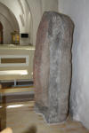 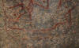


Den Eintrag zu diesem Runenstein aus der dänischen Runen Datenbank im Internet kann man hier abrufen.
Die Informationen in "Fund og Fortidsminder" zu dem Runenstein finden sich hier. Darin ist inzwischen dieser Zustandsbericht des Steinrestaurators Leif Vognsen aus dem Jahr 2018 eingebettet.
Über diesen Link finden sich zu dem Runenstein Informationen des Forschungsprojektes "Runes" der Akademie der Wissenschaften zu Göttingen.
Über die Webseite www.biopix-foto.de kann man sich dieses Foto des Runensteins anschauen, bei dem die Runen nochmals extra mit roter Farbe nachgezeichnet und darüber die Lesbarkeit deutlich erhöht wurde.
Eine Abhandlung in dänischer Sprache zu dem Runenstein findet sich im Internet über diesen Link
http://www.histsamf.dk/fra-himmerland-og-kjaer-herred/1958.pdf - auf Seite 246 bis 256 (Seite 91 - 101 im pdf Dokument).
Eine Info Broschüre zur Kirche und ihrer Ausstattung mit zahlreichen Fotos aus dem Jahr 2012 kann man über diesen Link im Internet als pdf-Datei in dänischer Sprache abrufen.